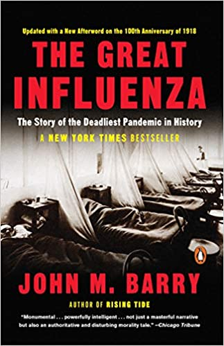

1. The Choice, by Dr. Edith Eva Eger
A New York Times Bestseller
At the age of sixteen, Edith Eger was sent to Auschwitz. Hours after her parents were killed, Nazi officer Dr. Josef Mengele, forced Edie to dance for his amusement and her survival. Edie was pulled from a pile of corpses when the American troops liberated the camps in 1945.
Edie spent decades struggling with flashbacks and survivor’s guilt, determined to stay silent and hide from the past. Thirty-five years after the war ended, she returned to Auschwitz and was finally able to fully heal and forgive the one person she’d been unable to forgive—herself.
Edie weaves her remarkable personal journey with the moving stories of those she has helped heal. She explores how we can be imprisoned in our own minds and shows us how to find the key to freedom. The Choice is a life-changing book that will provide hope and comfort to generations of readers.
2. Cloud Atlas, by David Mitchell
A postmodern visionary and one of the leading voices in twenty-first-century fiction, David Mitchell combines flat-out adventure, a Nabokovian love of puzzles, a keen eye for character, and a taste for mind-bending, philosophical and scientific speculation in the tradition of Umberto Eco, Haruki Murakami, and Philip K. Dick. The result is brilliantly original fiction as profound as it is playful. In this groundbreaking novel, an influential favorite among a new generation of writers, Mitchell explores with daring artistry fundamental questions of reality and identity.
Cloud Atlas begins in 1850 with Adam Ewing, an American notary voyaging from the Chatham Isles to his home in California. Along the way, Ewing is befriended by a physician, Dr. Goose, who begins to treat him for a rare species of brain parasite. . . . Abruptly, the action jumps to Belgium in 1931, where Robert Frobisher, a disinherited bisexual composer, contrives his way into the household of an infirm maestro who has a beguiling wife and a nubile daughter. . . . From there we jump to the West Coast in the 1970s and a troubled reporter named Luisa Rey, who stumbles upon a web of corporate greed and murder that threatens to claim her life. . . . And onward, with dazzling virtuosity, to an inglorious present-day England; to a Korean superstate of the near future where neocapitalism has run amok; and, finally, to a postapocalyptic Iron Age Hawaii in the last days of history.
But the story doesn’t end even there. The narrative then boomerangs back through centuries and space, returning by the same route, in reverse, to its starting point. Along the way, Mitchell reveals how his disparate characters connect, how their fates intertwine, and how their souls drift across time like clouds across the sky.
As wild as a videogame, as mysterious as a Zen koan, Cloud Atlas is an unforgettable tour de force that, like its incomparable author, has transcended its cult classic status to become a worldwide phenomenon.
3. The Ride of a Lifetime, by Bob Iger
 Robert Iger became CEO of The Walt Disney Company in 2005, during a difficult time. Competition was more intense than ever and technology was changing faster than at any time in the company’s history. His vision came down to three clear ideas: Recommit to the concept that quality matters, embrace technology instead of fighting it, and think bigger—think global—and turn Disney into a stronger brand in international markets.
Robert Iger became CEO of The Walt Disney Company in 2005, during a difficult time. Competition was more intense than ever and technology was changing faster than at any time in the company’s history. His vision came down to three clear ideas: Recommit to the concept that quality matters, embrace technology instead of fighting it, and think bigger—think global—and turn Disney into a stronger brand in international markets.
Today, Disney is the largest, most admired media company in the world, counting Pixar, Marvel, Lucasfilm, and 21st Century Fox among its properties. Its value is nearly five times what it was when Iger took over, and he is recognized as one of the most innovative and successful CEOs of our era.
This book is about the relentless curiosity that has driven Iger for forty-five years, since the day he started as the lowliest studio grunt at ABC. It’s also about thoughtfulness and respect, and a decency-over-dollars approach that has become the bedrock of every project and partnership Iger pursues, from a deep friendship with Steve Jobs in his final years to an abiding love of the Star Wars mythology.
“The ideas in this book strike me as universal” Iger writes. “Not just to the aspiring CEOs of the world, but to anyone wanting to feel less fearful, more confidently themselves, as they navigate their professional and even personal lives.”
4. The Great Influenza, by John M. Barry

Magisterial in its breadth of perspective and depth of research, The Great Influenza provides us with a precise and sobering model as we confront the epidemics looming on our own horizon. As Barry concludes, "The final lesson of 1918, a simple one yet one most difficult to execute, is that...those in authority must retain the public's trust. The way to do that is to distort nothing, to put the best face on nothing, to try to manipulate no one. Lincoln said that first, and best. A leader must make whatever horror exists concrete. Only then will people be able to break it apart."
At the height of World War I, history’s most lethal influenza virus erupted in an army camp in Kansas, moved east with American troops, then exploded, killing as many as 100 million people worldwide. It killed more people in twenty-four months than AIDS killed in twenty-four years, more in a year than the Black Death killed in a century. But this was not the Middle Ages, and 1918 marked the first collision of science and epidemic disease.
5. Good Economics for Hard Times, by Abhijit V. Banerjee and Esther Duflo
The winners of the Nobel Prize show how economics, when done right, can help us solve the thorniest social and political problems of our day.
Figuring out how to deal with today's critical economic problems is perhaps the great challenge of our time. Much greater than space travel or perhaps even the next revolutionary medical breakthrough, what is at stake is the whole idea of the good life as we have known it.
Immigration and inequality, globalization and technological disruption, slowing growth and accelerating climate change--these are sources of great anxiety across the world, from New Delhi and Dakar to Paris and Washington, DC. The resources to address these challenges are there--what we lack are ideas that will help us jump the wall of disagreement and distrust that divides us. If we succeed, history will remember our era with gratitude; if we fail, the potential losses are incalculable.
In this revolutionary book, renowned MIT economists Abhijit V. Banerjee and Esther Duflo take on this challenge, building on cutting-edge research in economics explained with lucidity and grace. Original, provocative, and urgent, Good Economics for Hard Times makes a persuasive case for an intelligent interventionism and a society built on compassion and respect. It is an extraordinary achievement, one that shines a light to help us appreciate and understand our precariously balanced world.
6. An American Marriage, by Tayari Jones
Newlyweds Celestial and Roy are the embodiment of both the American Dream and the New South. He is a young executive, and she is an artist on the brink of an exciting career. But as they settle into the routine of their life together, they are ripped apart by circumstances neither could have imagined. Roy is arrested and sentenced to twelve years for a crime Celestial knows he didn’t commit. Though fiercely independent, Celestial finds herself bereft and unmoored, taking comfort in Andre, her childhood friend, and best man at their wedding. As Roy’s time in prison passes, she is unable to hold on to the love that has been her center. After five years, Roy’s conviction is suddenly overturned, and he returns to Atlanta ready to resume their life together.
This stirring love story is a profoundly insightful look into the hearts and minds of three people who are at once bound and separated by forces beyond their control. An American Marriage is a masterpiece of storytelling, an intimate look deep into the souls of people who must reckon with the past while moving forward—with hope and pain—into the future.
7. These Truths, by Jill Lepore
Written in elegiac prose, Lepore’s groundbreaking investigation places truth itself―a devotion to facts, proof, and evidence―at the center of the nation’s history. The American experiment rests on three ideas―"these truths," Jefferson called them―political equality, natural rights, and the sovereignty of the people. And it rests, too, on a fearless dedication to inquiry, Lepore argues, because self government depends on it. But has the nation, and democracy itself, delivered on that promise?
These Truths tells this uniquely American story, beginning in 1492, asking whether the course of events over more than five centuries has proven the nation’s truths, or belied them. To answer that question, Lepore traces the intertwined histories of American politics, law, journalism, and technology, from the colonial town meeting to the nineteenth century party machine, from talk radio to twenty first century Internet polls, from Magna Carta to the Patriot Act, from the printing press to Facebook News.
Along the way, Lepore’s sovereign chronicle is filled with arresting sketches of both well known and lesser known Americans, from a parade of presidents and a rogues’ gallery of political mischief makers to the intrepid leaders of protest movements, including Frederick Douglass, the famed abolitionist orator; William Jennings Bryan, the three time presidential candidate and ultimately tragic populist; Pauli Murray, the visionary civil rights strategist; and Phyllis Schlafly, the uncredited architect of modern conservatism.
Americans are descended from slaves and slave owners, from conquerors and the conquered, from immigrants and from people who have fought to end immigration. "A nation born in contradiction will fight forever over the meaning of its history," Lepore writes, but engaging in that struggle by studying the past is part of the work of citizenship. "The past is an inheritance, a gift and a burden," These Truths observes. "It can’t be shirked. There’s nothing for it but to get to know it."
8. Growth, by Vaclav Smil
Growth has been both an unspoken and an explicit aim of our individual and collective striving. It governs the lives of microorganisms and galaxies; it shapes the capabilities of our extraordinarily large brains and the fortunes of our economies. Growth is manifested in annual increments of continental crust, a rising gross domestic product, a child's growth chart, the spread of cancerous cells. In this magisterial book, Vaclav Smil offers systematic investigation of growth in nature and society, from tiny organisms to the trajectories of empires and civilizations.
Smil takes readers from bacterial invasions through animal metabolisms to megacities and the global economy. He begins with organisms whose mature sizes range from microscopic to enormous, looking at disease-causing microbes, the cultivation of staple crops, and human growth from infancy to adulthood. He examines the growth of energy conversions and man-made objects that enable economic activities―developments that have been essential to civilization. Finally, he looks at growth in complex systems, beginning with the growth of human populations and proceeding to the growth of cities. He considers the challenges of tracing the growth of empires and civilizations, explaining that we can chart the growth of organisms across individual and evolutionary time, but that the progress of societies and economies, not so linear, encompasses both decline and renewal. The trajectory of modern civilization, driven by competing imperatives of material growth and biospheric limits, Smil tells us, remains uncertain.
9. Prepared, by Diane Tavenner
An educator and mother, Diane Tavenner cofounded the first Summit school in 2003. Summit Public Schools has won national recognition because 99 percent of Summit students get into a four-year college, and Summit students finish college at twice the national average. But in a radical departure from the environments created by the college admissions arms race, Summit students aren’t focused on competing with their classmates for rankings or test scores. Instead, students spend their days solving real-world problems and developing the skills of self-direction, collaboration, and reflection, all of which prepare them to succeed in college, thrive in today’s workplace, and lead a secure and fulfilled life.
Today, thousands of educators, tens of thousands of students, and hundreds of schools across thirty-eight states and the District of Columbia have embraced the Summit model.
Through personal stories and the hard-earned lessons of Summit’s exceptional team of educators and diverse students, Diane Tavenner shares the underlying learning philosophies and unconventional wisdom that lead to all children being prepared for school and life.
10. Why We Sleep, by Matthew Walker
 Sleep is one of the most important but least understood aspects of our life, wellness, and longevity. Until very recently, science had no answer to the question of why we sleep, or what good it served, or why we suffer such devastating health consequences when we don't sleep. Compared to the other basic drives in life—eating, drinking, and reproducing—the purpose of sleep remained elusive.
Sleep is one of the most important but least understood aspects of our life, wellness, and longevity. Until very recently, science had no answer to the question of why we sleep, or what good it served, or why we suffer such devastating health consequences when we don't sleep. Compared to the other basic drives in life—eating, drinking, and reproducing—the purpose of sleep remained elusive.
An explosion of scientific discoveries in the last twenty years has shed new light on this fundamental aspect of our lives. Now, preeminent neuroscientist and sleep expert Matthew Walker gives us a new understanding of the vital importance of sleep and dreaming. Within the brain, sleep enriches our ability to learn, memorize, and make logical decisions. It recalibrates our emotions, restocks our immune system, fine-tunes our metabolism, and regulates our appetite. Dreaming mollifies painful memories and creates a virtual reality space in which the brain melds past and present knowledge to inspire creativity.
Walker answers important questions about sleep: how do caffeine and alcohol affect sleep? What really happens during REM sleep? Why do our sleep patterns change across a lifetime? How do common sleep aids affect us and can they do long-term damage? Charting cutting-edge scientific breakthroughs, and synthesizing decades of research and clinical practice, Walker explains how we can harness sleep to improve learning, mood, and energy levels; regulate hormones; prevent cancer, Alzheimer’s, and diabetes; slow the effects of aging; increase longevity; enhance the education and lifespan of our children, and boost the efficiency, success, and productivity of our businesses. Clear-eyed, fascinating, and accessible, Why We Sleep is a crucial and illuminating book.